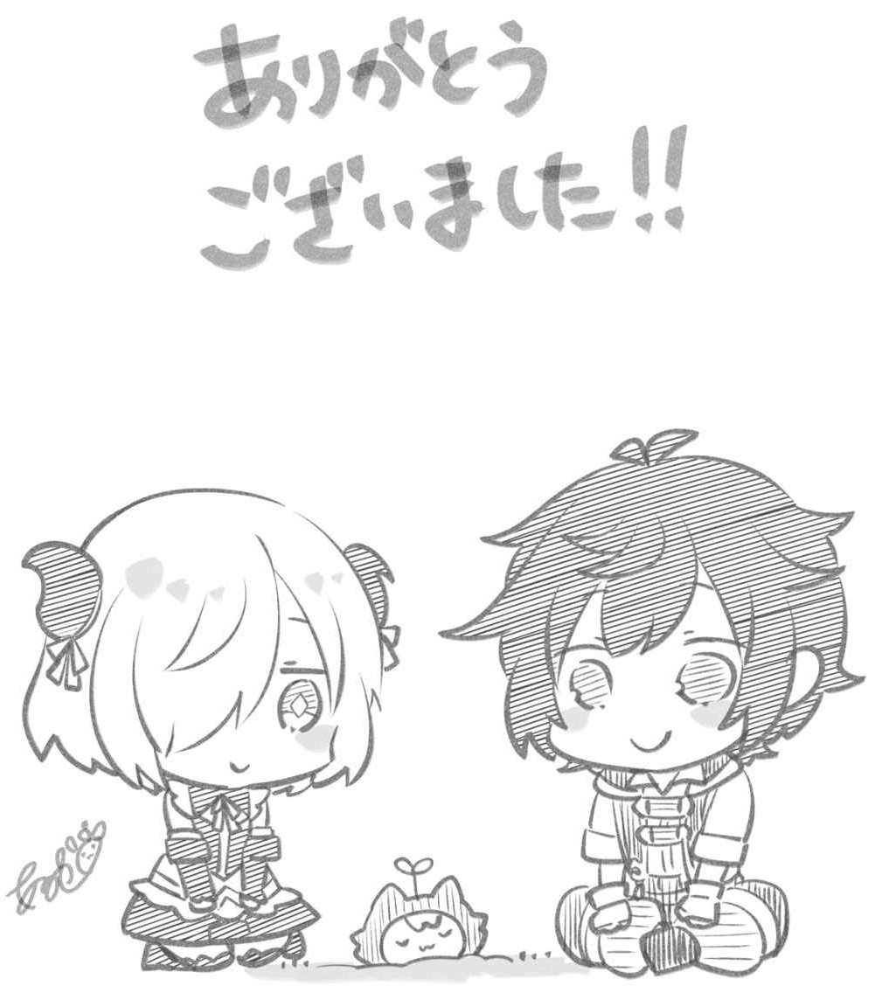

あとがき
ありがとうございます。完結です！
一つの物語、一つのシリーズをスタートさせ、そして完結まで書き切るというのは、物書きにとっては最高の喜びであり、こうして最後のあとがきを書くことができること、本当に感謝に堪えません。
さて、てのひら開拓村は、日本人である主人公が死んでから、別の世界の人間として生まれ変わる、いわゆる「異世界転生」ものでした。
自分はいわゆる異世界ものが好きでいろいろ読むのですが、実は、書くという段階になったとき、「転生」ものは考えることがなかったんです。読む分には好きですが、書くなら「異世界転移」かなと。それもちょっと捻った設定のものが好きだなと。
実際、私が最初に出した企画は日本が徐々に異世界に浸食されるタイプの異世界ものでした（これはボツりましたが、いずれ書こうとは思っています）。
……ただ、異世界ものの一ファンとして、一作は絶対にオーソドックスな異世界転生も書きたいと思っている自分もいて、私の場合平行して複数作書くのは不可能ですし、書くスピードも遅いので、年齢から逆算すればそう何シリーズも書けないのは明確。なら、ここで異世界転生を書こう。書くならブームが残っている今しかないだろう！ ということで、お届けしたのがてのひら開拓村だったというわけです。いかがだったでしょうか。ここまで付いてきてくれた読者様方には、きっと楽しんでいただけたと信じております。
次回作については、これを書いている時点では未定ですが、一つ決まっているのは異世界ものであるということです。なぜなら、星崎は異世界ものが大好きだから！ 新作情報は、作者のツイッターをフォローしていただければゲットできますので、そちらも是非によろしくお願い致します。
さて、てのひら開拓村に関してはこれにて終幕となりますが、コミカライズのほうは、まだまだ続いていきます！ 原作との違いも含め、楽しんでいただける作品となっておりますので、ぜひぜひ読んでみて下さい！
謝辞です。
イラストのあるや先生、シリーズを通して素晴らしいイラストの数々、愛くるしい戦士君たち、私にとって人生の宝物となりました。本当にありがとうござます。担当編集のＴ様、あれやこれや迷惑をお掛けしましたが、私にとっては滅茶苦茶勉強になり得がたい経験となりました。次はもっと準備をして望みたい所存です。そして、ＭＦ文庫Ｊ編集部のみなさま、本書の製作に関わったすべての方、なにより、ここまで読んで下さった読者方々に最大限の感謝を。
そして、必ずや次回作でお会いしましょう！ それまでは、さらば！
